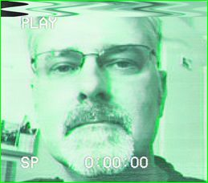

Instrumentation • Control Systems • Electronics • Software
Senior Electronics Engineer working on fusion technology, cryogenics, and scientific instrumentation.
--- Website under construction ---

Hi! I'm Ben, a Senior Electronics Engineer working for UK Atomic Energy Authority (UKAEA) based at UKAEA South Yorkshire (formerly the Fusion Technology Facility) in Rotherham, providing instrumentation, electronics, software, consultancy, and commissioning support to multiple high-value fusion technology projects. I was Lead C&I Engineer for the ELSA project at UKAEA (SY), which delivered a state-of-the-art cryogenic test facility aimed at supporting the STEP Re-mountable Joints (RMJ) programme, and other cutting-edge fusion research programmes.
Academically strong with research experience in physical sciences and engineering, I have many years mixed industrial R&D experience including low to mid-TRL prototype development and technical support - much of which has been in university research groups and team-supervisory roles. I have worked on projects in sectors including fusion, nuclear (Rolls Royce), particle physics (CERN), aerospace, environmental, and metal casting. I am experienced in the development of hardware and software subsystem components, with excellent writing skills and a well-rounded knowledge of scientific instrumentation.